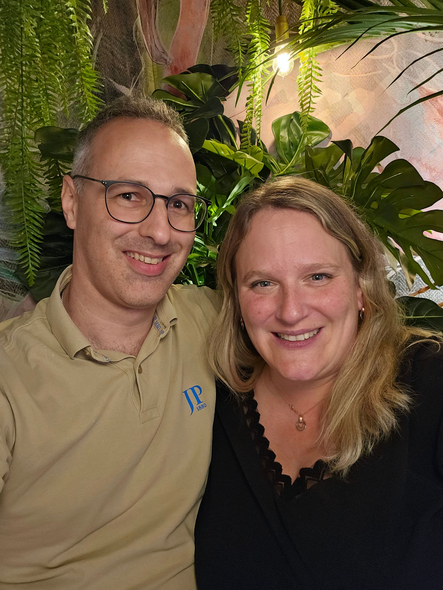

Türkisblaues Wasser, schroffe Küstenstrassen und Dörfer, in denen die Zeit langsamer läuft — unsere nächste gemeinsame Reise führt uns quer über die Insel.
Sardinien ist zu vielseitig für nur einen Ort. Deshalb ziehen wir weiter: vorbei an Steilküsten und versteckten Buchten, durch das bergige Hinterland mit seinen alten Steindörfern, bis hinunter zu den Traumstränden im Süden. Dazwischen: gutes Essen, lange Abende und garantiert die eine oder andere spontane Planänderung.
Was uns an dieser Insel reizt, ist der Kontrast: schroffe Granitberge im Landesinneren, die sich innerhalb weniger Fahrminuten in türkisfarbene Buchten verwandeln. Dörfer, in denen mittags alles stillsteht, und Küstenstrassen, die genau dafür gemacht sind, spät dranzukommen — weil man alle zwei Kilometer anhalten will.
Unten findet ihr das komplette, verbindliche Reiseprogramm mit allen Stationen, Terminen und Details als PDF zum Durchblättern und Herunterladen.

Ankunft, erste Buchten, Altstadtgassen zum Ankommen.
Bergiges Hinterland, alte Steindörfer, ruhige Strassen.
Türkiswasser, Granitfelsen, die Postkarten-Seite der Insel.
Katalanisches Flair, Sonnenuntergänge über dem Meer.
Diese vier Etappen dienen der Orientierung — die verbindlichen Daten, Stationen und Details stehen im Reiseprogramm unten.
Boarding